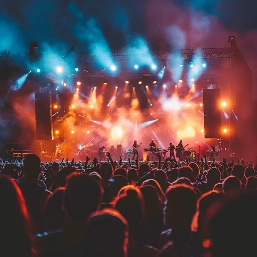
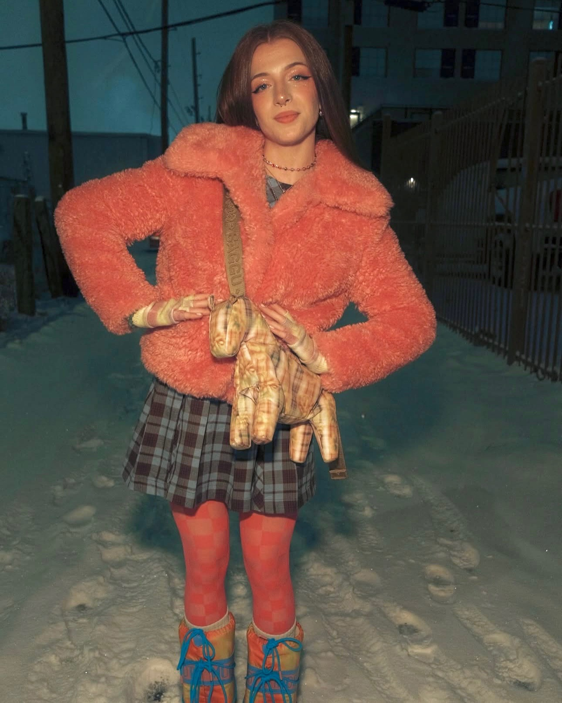

Chess
In my free time, I enjoy playing chess with friends. Sometimes I attend local chess clubs, such as the Boulder Chess Club or CU Chess club, as well. While I am not the best at it, I enjoy the strategy that goes into playing!

Music
Music has always been a great interest of mine, and I love attending local concerts to discover new music and spend time with friends in a fun atmosphere.

Fashion
My favorite way to express myself is through my clothes, and in the realm of fashion, I would consider myself a collector. I love finding weird, unique (and often colorful) pieces of clothing that I feel stand-out.